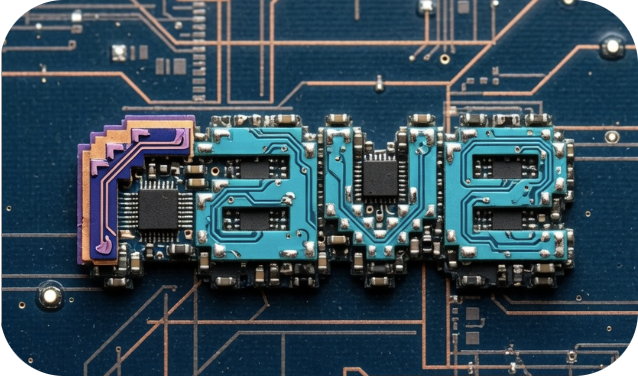

RV64IMAC emulator
rave in your browser
Boot firmware and a kernel, then talk to the guest over its emulated 16550 UART.
Custom boot images use the bundled 128 MiB device tree. No files leave your browser.

RV64IMAC emulator
Boot firmware and a kernel, then talk to the guest over its emulated 16550 UART.
Custom boot images use the bundled 128 MiB device tree. No files leave your browser.